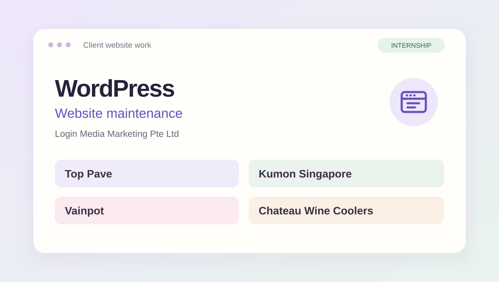

Client website workInternship contribution
WordPress Website Maintenance
Worked on client WordPress websites and contributed to their ongoing maintenance during my internship at Login Media Marketing Pte Ltd.
I'm a Business & Financial Technology student at Nanyang Polytechnic. I enjoy building useful websites, exploring data, and turning ideas into clear, practical experiences.
Open to IT internships
Selected work
Projects across web development, data analytics, and interface design.

Worked on client WordPress websites and contributed to their ongoing maintenance during my internship at Login Media Marketing Pte Ltd.

Connecting youths and seniors through a skill exchange platform, with teach / learn listings and a clear request flow.

Exploring walk-in waiting times, care stages, and service patterns through Power BI reports and DAX measures.

A survey-based group project on student spending. My work focused on testing the S$400 benchmark and interpreting the results in Python.

A youth-friendly club website that makes performances, schedules, and joining information easy to explore.
A little about me
My background in IT Application Development gave me a foundation in programming and web development. I'm now studying Business & Financial Technology, building on that foundation and exploring how technology supports business and finance.
I like understanding how something works, breaking a problem into manageable steps, and making the result easier to use. I'm open to different IT internship roles where I can keep learning and contribute to a team.
My experience & educationMy learning journey
Nanyang Polytechnic
Business, finance, and technology.
Institute of Technical Education
A foundation in building applications and websites.
Login Media Marketing Pte Ltd
Client website updates, responsive pages, testing, and maintenance.
My toolkit
Building the interface, connecting the logic, and working with structured data.
Preparing data, building useful measures, and explaining patterns clearly.
Creating readable interfaces while developing a broader understanding of technology.